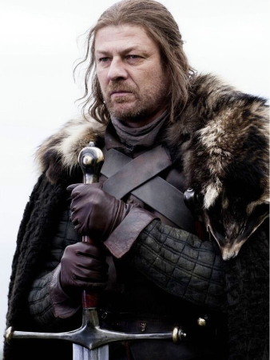
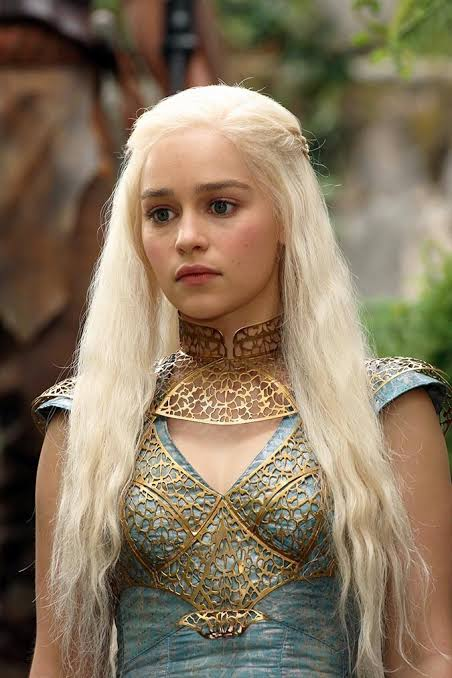
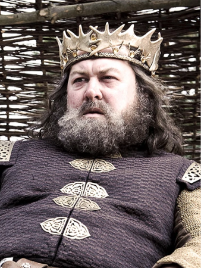

Résumé de la saison
<-Toutes les saisons
À ce jour
Les maisons de Westeros s'affrontent pour le Trône de fer pendant qu'une menace ancienne se réveille au Nord. Alors que l'hiver approche, chaque famille doit choisir entre loyauté, ambition et survie.
Au Sud, la cour de Port-Réal est le théâtre d'intrigues permanentes : alliances de circonstance, mariages stratégiques et trahisons redessinent l'équilibre du pouvoir. Les décisions prises dans l'ombre ont des conséquences dramatiques pour tout le royaume.
Au Nord, la Garde de Nuit et ses alliés tentent d'alerter un royaume divisé du danger qui grandit au-delà du Mur. De l'autre côté du détroit, une héritière exilée rassemble une armée et rêve de reconquérir le trône de ses ancêtres.
Entre batailles spectaculaires, duels de pouvoir et dilemmes moraux, la saison suit des personnages que tout oppose mais que le destin finit par réunir, jusqu'à un final qui bouleverse l'ordre établi.
| Année | 2011 |
|---|---|
| Episodes | 10 |
| Format | 60 min |
| Age | -16 ans |
| 4/5 | |
| 2150 votants | |
L'hiver vient.
Theme principaux
- Pouvoir et intrigues
- Guerre et loyauté
- Magie et dragons
- Famille et trahison
Bande-annonce de la saison
-

Sean Bean
Eddard Stark -
Lena Heady
Cersei Lannister -

Peter Dinklage
Tyrion Lannister -

Emilia Clarke
Daenerys Targaryan -
Kit Harington
Jon Snow -

Mark Addy
Robert Baratheon